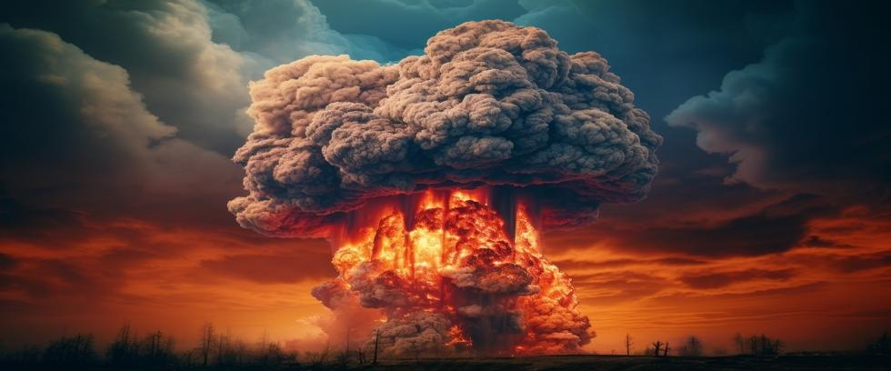

Conventional wisdom among Western nations today assumes that Iran was close to building a nuclear weapon before America bombed its nuclear facilities in June of 2025. Observers point to Iran’s 400kg stock of 60% enriched uranium as proof of dubious intentions. 400kg of 60% enriched uranium is enough for about ten nuclear weapons once further enriched to 90% weapons-grade.
But, except for a small research reactor that consumes a modest amount of 20% enriched uranium, Iran’s nuclear reactors will all burn uranium enriched to less than 4%. Experts agree there is no peaceful use Iran could possibly have for 60% enriched uranium. So why did they enrich it so much, if not for nukes?
Ambiguity Can Be Strategic
Iran has long followed a path of "strategic ambiguity" in its nuclear program. Like Israel, which has never officially confirmed its nuclear arsenal, Iran benefits from keeping adversaries unsure of its true capabilities. This ambiguity complicates foreign planning and deters potential attacks. Iran insists its nuclear program is peaceful, but the secrecy surrounding nuclear facilities, missile development sites, and enriched uranium stocks makes that seem questionable.
The Ill-fated JCPOA
The 2015 Joint Comprehensive Plan of Action (JCPOA) was the closest the world came to freezing Iran’s nuclear program. For a brief moment, there was partial transparency. Iran submitted to limited inspections, dismantled some centrifuges, and shipped most of its enriched uranium to Russia. But when the U.S. withdrew from the deal in 2018, Iran resumed enrichment activities and increased enrichment levels far beyond the limits of the agreement.
Many experts express concern about Iran’s current stock of 60% enriched uranium, but fail to explain how close that material is to becoming 90% weapons-grade. A common misconception is that 60% enrichment is two-thirds of the way to 90% enrichment – but enrichment level, versus time, is not a linear scale.
When uranium ore passes through a centrifuge enrichment system, most of the material is separated out and rejected, leaving the rest to further enrich the next cycle. Less material to process each cycle requires less time to process it. Jigsaw puzzles follow a similar pattern. Each piece is equally important, but the last pieces fall into place much faster than the first pieces do.
As a result, the time required to enrich uranium from 60% to 90% is negligible.
Weapons Grade is not required
In January of 2023, UN inspectors noticed some centrifuges connected in a suspicious arrangement at Iran’s Fordow uranium enrichment plant. Upon further investigation, they discovered uranium particles inside the centrifuges enriched to 83.7%.
Iran explained how “unintended fluctuations” may have occurred during a “transition period.” Experts say that makes no sense on the face of it, but it would make sense if the particles were scraps left behind after the centrifuges were emptied of their contents.
So, where did the bulk of that 83.7% enriched uranium go? 90% enrichment is an arbitrary benchmark for weapons-grade uranium, not a point below which weapons are impossible. With a little more material, 83.7% enriched uranium is readily usable for nuclear weapons. After all, the atomic bomb dropped on Hiroshima only contained 80% enriched uranium.
O,r looked at another way, 400 kg of 60% enriched uranium could make about six atomic bombs equivalent to the one dropped on Hiroshima without further enrichment. Each nuke would require 1.5 times more material than it would if 90% enriched uranium were used.
Most observers believe Iran’s stock of 60% enriched uranium was moved elsewhere before America’s bombing raid could destroy it. Which makes sense, of course, but then raises the questions of where did it go to and what is planned for it now.
Limited Reliability of Intelligence
The U.S. failed to find weapons of mass destruction in Iraq, despite confident assurances by intelligence agencies that they were there. Today, most analysts believe Iran has not built nuclear weapons yet, but intelligence gaps, satellite limitations, and the likelihood of still-secret underground facilities raise serious doubts.
Look no further than North Korea, where the best intelligence money could buy was entirely wrong. Western analysts claimed for years that North Korea could not build nuclear weapons any time soon. Then the DPRK exploded an atomic bomb. Taken by surprise, the same analysts then assured us that North Korea could never build a hydrogen bomb – or a missile to deliver it, even if they could.
But today, North Korea is an acknowledged nuclear weapons state, able to strike America’s heartland with thermonuclear warheads. Predictions by intelligence agencies are often their best guess. Claims that Iran does not have nuclear weapons fall into the same category of uncertain speculation as those mistaken claims about North Korea did.
Also of interest is the fact that some Iranian officials have been quoted as saying they believe Iran already has nuclear weapons. For instance, a member of Iran’s parliament – Ahmad Bakshayesh Ardestani – said in 2024 that he thinks Iran already has nukes, but was keeping it secret for obvious reasons. Mr. Ardestani offered no proof of course, but his comment seems to reflect those of other Iranian officials speaking to journalists off the record.
Secrecy Is the Norm in Nuclear Development
Almost every nuclear weapons program in history relied on secrecy. America’s Manhattan Project, India and Pakistan’s illicit networks, and Israel’s undeclared arsenal all operated outside public view until their existence could not be denied. Iran’s former concealment of enrichment facilities at Natanz and Fordow followed the same pattern. In fact, it would not be surprising if similar efforts were underway in places around the world that outsiders are not yet aware of. Secrets are secret until they are not.
Assassinations and Sabotage Only Slow Progress
From the assassination of top nuclear scientist Mohsen Fakhrizadeh to cyberattacks on centrifuges at Natanz, Iran’s nuclear program has been under constant pressure. Yet those setbacks only delayed Iran’s effort. Fakhrizadeh was the architect of its weaponization plan, so progress slowed for a while after his death. But not for long. Iran adjusted and moved on, with other talented scientists soon taking his place.
A better solution is needed for everyone.
Broken Promises
The Non-Proliferation Treaty (NPT), signed by Iran, obligates most nations to forgo nuclear weapons. But the NPT is merely symbolic since it lacks enforcement provisions. For example, the requirement that all nations have the right to enrich as much uranium and produce as much plutonium as they want is often ignored without consequence.
America in particular routinely breaks its NPT promise to not interfere with other nations uranium enrichment programs – all while ignoring its own NPT obligations. The treaty permits all nations to develop nuclear power without interference, but requires that most countries refrain from building nukes. Yet the NPT also obligates nuclear-armed nations to work diligently in good faith to eliminate their nuclear weapons as well.
That promise was made 55 years ago. Five decades. Does it seem like nuclear-armed nations are honoring their NPT commitments to eliminate nukes? Or just using certain parts of the treaty to keep other nations disarmed, while ignoring the rest?
This unbalanced situation explains why the NPT is in jeopardy today, with recent NPT five-year review conferences ending in angry rhetoric instead of agreement. Many nations increasingly feel that the nuclear weapons monopoly the treaty gave America, Russia, China, England, and France is grossly immoral and unfair.
Most are losing patience. This precarious situation cannot last much longer. What if the shoe were on the other foot? To be told that, “I can have this if I want, and for as long as I want. But you can never have it”. It’s easy to see why the current situation does not sit well with a great many nations.
This unsustainable disparity goes to the heart of the reason why nuclear weapons must be eliminated now, while we still have the chance. Today, nine nuclear-armed nations make the world a more dangerous place. What would two or three times that many make it look like? The only sure way to prevent that from happening is through voter-forced universal elimination of nuclear weapons.
Misjudged Public Opinion
Observers note how America’s bombing raid hardened Iranian public opinion to the extent that most have rallied around their leaders like never before. Polling shows about 70% of Inanians now support building nuclear weapons as insurance against something like that happening again. The murder of their scientists and bombing of their facilities has hardened their resolve to resist the “foreign invaders'” assault on their homeland at all costs.
Which is exactly the opposite of what officials hoped might happen after attacking Iran. It makes you wonder what they were thinking. Were they not aware that people rally around even unpopular leaders if their country is attacked? Unfortunately, resistance is becoming an Iranian symbol of national sovereignty and pride. They may face some economic hardship, but nuclear development continues.
Where We Stand Now
Does Iran already have nuclear weapons? Hard to say. But based upon past behaviors, regional context, and patterns observed in similar situations, the possibility must be considered.
Information from sources like the IAEA cannot be viewed as comprehensive, since they have never visited some military bases Iran considers off-limits to foreigners. Are we to blindly accept that nothing suspicious has been happening at those off-limits locations? Iran has the know-how and resources to build nuclear weapons. Whether they have done so is a matter of speculation for outsiders, just as it was with North Korea.
It’s understandable if Iran kept nuclear weapons a secret – at least for now. If Iran does have nukes, and the secret gets out, it will surely spark a Middle East arms race where Saudi Arabia, Turkey, Egypt, and possibly others go nuclear as well. The implications of that outcome are so alarming that they must be avoided at all costs.
Honoring Bargains
At Our Planet Project Foundation, we believe Iran may already have nuclear weapons. They’ve had the mechanical know-how for years. It’s been over 30 months since IAEA inspectors discovered particles of 83.7% enriched uranium at Fordow. Enough uranium for six atomic bombs without further enrichment is currently in the wind somewhere inside a physically large country with countless locations to hide. But even if Iran has not built nukes, the situation illustrates the conflict at the heart of the matter that will recur time and again until this issue is resolved.
Nuclear have-nots were mostly content without nuclear weapons when they believed that nuclear-armed nations would honor their NPT commitment to also eliminate nukes. No one bothers to even pretend that’s happening anymore. But if nuclear-armed nations want everyone else to reject building nuclear weapons, they must honor their word as well. If they do not, the number of nuclear-armed nations will inevitably grow.